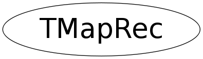

class TMapRec
TMapFile This class implements a shared memory region mapped to a file. Objects can be placed into this shared memory area using the Add() member function. Whenever the mapped object(s) change(s) call Update() to put a fresh copy in the shared memory. This extra step is necessary since it is not possible to share objects with virtual pointers between processes (the vtbl ptr points to the originators unique address space and can not be used by the consumer process(es)). Consumer processes can map the memory region from this file and access the objects stored in it via the Get() method (which returns a copy of the object stored in the shared memory with correct vtbl ptr set). Only objects of classes with a Streamer() member function defined can be shared.
Function Members (Methods)
public:
| TMapRec(const TMapRec&) | |
| TMapRec(const char* name, const TObject* obj, Int_t size, void* buf) | |
| ~TMapRec() | |
| void* | GetBuffer(Long_t offset = 0) const |
| Int_t | GetBufSize() const |
| const char* | GetClassName(Long_t offset = 0) const |
| const char* | GetName(Long_t offset = 0) const |
| TMapRec* | GetNext(Long_t offset = 0) const |
| TObject* | GetObject() const |
| TMapRec& | operator=(const TMapRec&) |
Class Charts
{kind=link}
{kind=link}
{kind=link}
{kind=link}

Function documentation
~TMapRec()
const char * GetClassName(Long_t offset = 0) const
{ return (char *)((Long_t) fClassName + offset); }